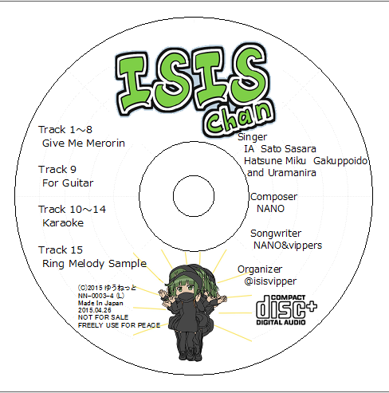

[ISISちゃん]
レーベルについて
[元に戻る]
Windows用の「かんたんデザイン工房」で作成されたものです。
[このフォルダを開く]

このレーベル画像はサンプルです。上記を印刷してもうまくレーベルに印刷できません。
CD-RやCDを発行する時、以下を守ってください。
- 必ず、CDDA+CDROMの構成にし、再頒布可能なように label フォルダは変更せずに残してください。
- CD EXTRAのロゴを付けてください。compact disc+ DIGITAL AUDIO のロゴです。
- 販売品にする場合、裏まにら氏の歌声の存在するトラックを削除して下さい。承諾は私（＝なの）のみ取得しています。また、Uramanira氏の表記を外して下さい。
- 歌手は使用している歌手をすべて英語表記で列記して下さい。
- 画像は便宜上つけたものです。入れ替えても構いません。
- 編曲をしない限り、Composerを変更しないで下さい。
- 歌詞を変えない限り、Songwriterを変更しないで下さい。
- 左下のCopyright表記等は、そのまま使用するか、変更する場合は以下を守ってください。
- (C) 発行年 発行者の名前
- 製造番号を勝手につけてください。 (L)
- 製造国を示す文言（Made In Japan等） 実際のCDプレス場所の国を記載お願いします。
- 発行日
- 非売品であれば、NOT FOR SALEを付けてください。販売品であれば、税抜き価格を表記して下さい。
- FREELY USE FOR PEACE の文言を必ずつけて下さい
- 可能な限り、レーベルは英語表記でお願いします。
- Give Me Merorin、ISISちゃん、または関連する素材のみが存在するコンテンツには、(X)またはⓍの記載をしないで下さい。
- ※UTF-8が使用できる場合は、(C)ではなくⒸ、(L)ではなくⓁで記載をお願いします。